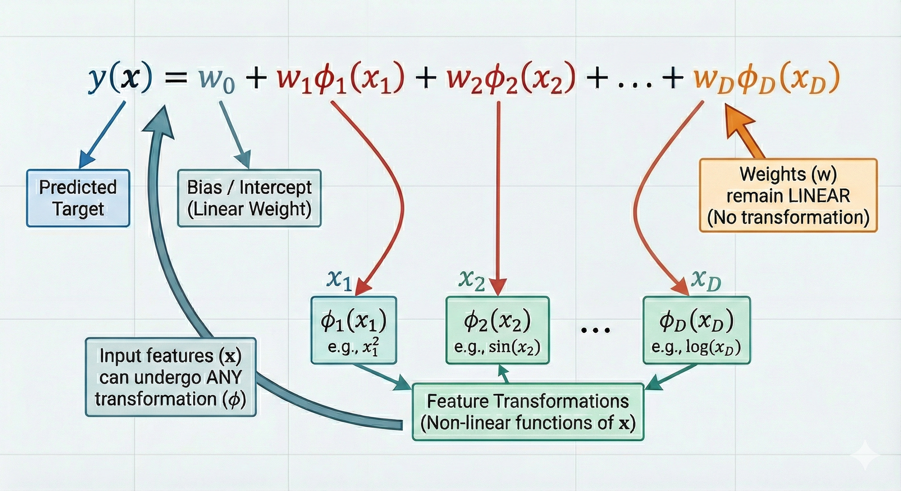
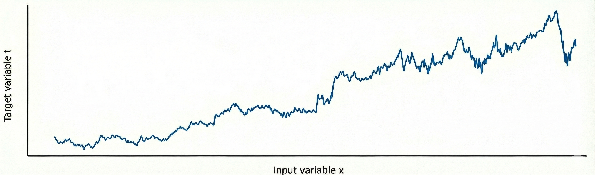
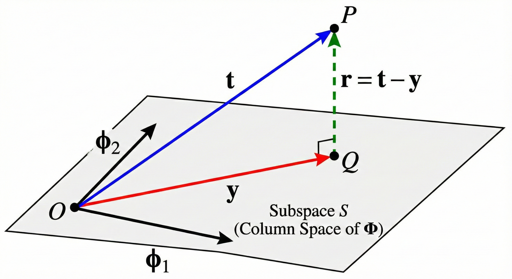

Chapter 1: Linear Models for Regression
This chapter mostly deals with linear models for regression and their basis functions (a fancy way of saying function on 'x'). This equation will come up a lot: \[ y(x) = w_0 + \sum_{i=1}^D w_i\,\phi\!\left({x}\right)\quad (1.1) \] where 'N' is the total number of features and \(w_i\) is the weight associated to the \(i\)-th feature.
These are the key notations we'll be using in the chapter:
- \(x\): Input Sample
- \(t\): Target variable
- \(N\): Number of initial features
- \(M\): Number of data points
- \(D\): Number of input features (after feature engineering)
- \(\mathbf{w}\): Vector of model parameters (weights)
- \(y(x, \mathbf{w})\): Model prediction for input \(x\) given parameters \(\mathbf{w}\)
- \(\phi(x)\): Basis function applied to input \(x\) (for example, polynomial, Gaussian, etc.)
- \(\Phi\): Design matrix containing basis function evaluations for all data points
Suppose we are asked to model the relationship between apartment size (in sq.ft) and price for a Brigade apartment project in Bangalore.
| Flat ID | Size x (sq.ft) | Total Price (₹ Lakhs) |
|---|---|---|
| F1 | 650 | 68 |
| F2 | 800 | 82 |
| F3 | 1100 | 105 |
| F4 | 1400 | 128 |
| F5 | 1800 | 167 |
| F6 | 2200 | 215 |
A simple straight-line model may not be sufficient to describe this data accurately. In real-world, the relationship between size and price is often nonlinear due to location effects, floor level, amenities, and demand variations across different size ranges etc etc. The below equation is a general expression of what we're trying to achieve:

Question
Show that the 'tanh' and the logistic sigmoid functions are related by:
\[ \tanh(a) = 2\,\sigma(2a) - 1 \]Hence show that a general linear combination of logistic sigmoid functions of the form:
\[ y(x,w) = w_0 + \sum_{j=1}^M w_j\,\sigma\!\left(\frac{x-\mu_j}{s}\right) \quad (1.2) \]is equivalent to a linear combination of \(\tanh\) functions of the form:
\[ y(x,u) = u_0 + \sum_{j=1}^M u_j\,\tanh\!\left(\frac{x-\mu_j}{s}\right) \quad (1.3) \]and find expressions relating the new parameters \(\{u_j\}\) to the original parameters \(\{w_j\}\).
Solution:
We know that the logistic function:
\[ \sigma(a) = \frac{1}{1 + e^{-a}} \]and the RHS can be written as
\[ 2 . \frac{1}{1 + e^{-2a}} - 1 => \frac{2e^{2a}}{1 + e^{2a}} - 1 \]solving the above equation gives us
\[ \frac{e^{2a} - 1}{e^{2a} + 1} \]which is nothing but \(\tanh(a)\) (a different form though)
We can rewrite the relationship as:
\[ \sigma(a) = \frac{\tanh\left(\frac{a}{2}\right) + 1}{2} \]Substitute this relation into equation (1.2):
\[ \begin{aligned} y(x,w) &= w_0 + \sum_{j=1}^M w_j\,\sigma\!\left(\frac{x-\mu_j}{s}\right) \\ &= w_0 + \sum_{j=1}^M w_j\cdot\frac{1}{2}\left[\tanh\!\left(\frac{x-\mu_j}{2s}\right) + 1\right] \\ &= \left(w_0 + \frac{1}{2}\sum_{j=1}^M w_j\right) + \sum_{j=1}^M \frac{w_j}{2}\,\tanh\!\left(\frac{x-\mu_j}{2s}\right) \end{aligned} \]Comparing this with equation (1.3), we identify the new parameters as:
\[ u_0 \;=\; w_0 \;+\; \frac{1}{2}\sum_{j=1}^M w_j \] \[ u_j \;=\; \frac{w_j}{2} \qquad (j = 1,\ldots,M) \]which aligns to eqn (1.3) (not sure if there's a printing mistake but you get the idea)
Continuing from our Brigade apartment example, here's how the actual data might look like

The above graph represents a real life scenario where there's always a noise associated with the target variable. This can be generalised by the below equation:
\[ \mathbf{t}\ = \Phi \mathbf{w} + \boldsymbol{\epsilon} \]where \(\mathbf{t}\) is the column vector representing the target values for all data points; \(\Phi \mathbf{w}\) is the deterministic linear prediction; and \(\boldsymbol{\epsilon}\) represents the Gaussian noise (added so that we can generalise the model).

In order to learn the spread or uncertainity (as \(y(x, \mathbf{w})\) will just predict a value but we're more interested in the distribution), we'll calculate the probability of the target variable given the input and parameters.
\[ p(t_n|x_n, \mathbf{w}, \sigma^2) = \mathcal{N}(y(x_n, \mathbf{w}), \sigma^2) \]where \(\sigma^2\) is the variance of the Gaussian noise.
Now assuming all the data points are independent, likelihood (we'll discuss more on this in the later sections) is:
\[ p(\mathbf{t}|\mathbf{X}, \mathbf{w}, \sigma^2) = \prod_{n=1}^{M} \mathcal{N}(y(x_n, \mathbf{w}), \sigma^2) \]Taking the logarithm of the likelihood function, we get the log-likelihood:
\[ \ln p(\mathbf{t}|\mathbf{X}, \mathbf{w}, \sigma^2) = -\frac{M}{2}\ln \sigma^{2} - \frac{M}{2}\ln(2\pi) - \frac{E_D(\mathbf{w})}{\sigma^{2}} \]where \(E_D(\mathbf{w})\) is the sum-of-squares error function defined as:
\[ E_D(\mathbf{w}) = \frac{1}{2}\sum_{n=1}^{M} \left\{ t_n - \mathbf{w}^T \phi(\mathbf{x}_n) \right\}^2 \]Maximizing the log-likelihood is equivalent to minimizing the sum-of-squares error function.
\[ E(\mathbf{w}) = \frac{1}{2}\|\mathbf{t}-\Phi\mathbf{w}\|^2 = \frac{1}{2}(\mathbf{t}-\Phi\mathbf{w})^T(\mathbf{t}-\Phi\mathbf{w}) \] \[ \ln p(\mathbf{t}|\mathbf{w},\sigma^{2}) = \text{const} - \frac{E(\mathbf{w})}{\sigma^{2}} \] \[ \nabla_{\mathbf{w}} \ln p = - \nabla_{\mathbf{w}} \frac{E(\mathbf{w})}{\sigma^{2}} = 0 \] \[ \nabla_{\mathbf{w}} E(\mathbf{w}) = \nabla_{\mathbf{w}} \left[ \frac{1}{2}(\mathbf{t}-\Phi\mathbf{w})^T(\mathbf{t}-\Phi\mathbf{w}) \right] \] \[ \nabla_{\mathbf{w}} E(\mathbf{w}) = -\Phi^T(\mathbf{t}-\Phi\mathbf{w}) \] \[ \Rightarrow -\Phi^T\mathbf{t} + \Phi^T\Phi\mathbf{w} = 0 \] \[ \Rightarrow \Phi^T\Phi\mathbf{w} = \Phi^T\mathbf{t} \] \[ \Rightarrow \mathbf{w} = (\Phi^T\Phi)^{-1}\Phi^T\mathbf{t} \]Question
Show that the matrix \[ H = \Phi(\Phi^{T}\Phi)^{-1}\Phi^{T} \tag{1.4} \] takes any vector \( \mathbf{v} \) and projects it onto the space spanned by the columns of \( \Phi \). Use this result to show that the least-squares solution \[ \mathbf{y} = \Phi\mathbf{w}_{\text{LS}} = \Phi(\Phi^{T}\Phi)^{-1}\Phi^{T}\mathbf{t} \ \] corresponds to an orthogonal projection of the vector \( \mathbf{t} \) onto the manifold \( \mathcal{S} \).
Solution:
Let's define our matrix as \(H\) (the Hat Matrix). If we multiply it by any arbitrary vector \(\mathbf{v}\):
\[ \mathbf{u} = H\mathbf{v} = \Phi \underbrace{\left[ (\Phi^T\Phi)^{-1}\Phi^T \mathbf{v} \right]}_{\text{some vector } \mathbf{a}} \]The result \(\mathbf{u}\) is equal to \(\Phi \mathbf{a}\). By definition, any vector \(\Phi \mathbf{a}\) is a linear combination of the columns of \(\Phi\). Therefore, \(H\) maps any vector into the column space of \(\Phi\).
The least squares prediction is \(\mathbf{y} = H\mathbf{t}\). The residual (error) vector is:
\[ \mathbf{r} = \mathbf{t} - \mathbf{y} = (I - H)\mathbf{t} \]For the projection to be orthogonal, the residual \(\mathbf{r}\) must be perpendicular to the subspace (the columns of \(\Phi\)). We check the dot product \(\Phi^T \mathbf{r}\):
\[ \begin{aligned} \Phi^T \mathbf{r} &= \Phi^T (\mathbf{t} - \Phi(\Phi^T\Phi)^{-1}\Phi^T \mathbf{t}) \\ &= \Phi^T \mathbf{t} - (\Phi^T\Phi)(\Phi^T\Phi)^{-1}\Phi^T \mathbf{t} \\ &= \Phi^T \mathbf{t} - I \cdot \Phi^T \mathbf{t} \\ &= 0 \end{aligned} \]Since the dot product is zero, the residual is orthogonal to the column space.

In the previous problem (1.2), we assumed that every data point (apartment price) was equally reliable. However, in real-world scenarios, this is rarely the case.
For example, in our Brigade apartment dataset:
i. A price from a verified government sale deed is highly reliable (High weight).
ii. A price from an anonymous online posting might be noisy or inaccurate (Low weight).
To handle this, we assign a "weight" \(r_n\) to each data point. If a point is reliable, \(r_n\) is large; if it's noisy, \(r_n\) is small. This technique is known as Weighted Least Squares.
We collect these weights into a diagonal matrix \(R\) of size \(M \times M\). The off-diagonal elements are zero because we assume the noise in one price is independent of the others:
\[ R = \begin{bmatrix} r_1 & 0 & \cdots & 0 \\ 0 & r_2 & \cdots & 0 \\ \vdots & \vdots & \ddots & \vdots \\ 0 & 0 & \cdots & r_M \end{bmatrix} \]
Question
Consider a data set in which each data point \(t_n\) is associated with a weighting factor \(r_n > 0\), so that the sum-of-squares error function becomes
\[ E_D(\mathbf{w}) = \frac{1}{2}\sum_{n=1}^{M} r_n \left\{ t_n - \mathbf{w}^T \phi(\mathbf{x}_n) \right\}^2 \]Find an expression for the solution \(\mathbf{w}^*\) that minimizes this error function. Give two alternative interpretations of the weighted sum-of-squares error function in terms of: (i) data-dependent noise variance and (ii) replicated data points.
Solution:
First, it is helpful to express the error function in matrix notation. We introduce a diagonal matrix \(\mathbf{R}\) of size \(M \times M\) containing the weights:
\[ \mathbf{R} = \text{diag}(r_1, r_2, \dots, r_M) \]The weighted sum-of-squares error can now be written as:
\[ E_D(\mathbf{w}) = \frac{1}{2} (\mathbf{t} - \Phi\mathbf{w})^T \mathbf{R} (\mathbf{t} - \Phi\mathbf{w}) \]To find the minimizer \(\mathbf{w}^*\), we set the gradient with respect to \(\mathbf{w}\) to zero:
\[ \nabla_{\mathbf{w}} E_D(\mathbf{w}) = -\Phi^T \mathbf{R} (\mathbf{t} - \Phi\mathbf{w}) = 0 \]Rearranging the terms to solve for \(\mathbf{w}\):
\[ \Phi^T \mathbf{R} \Phi \mathbf{w} = \Phi^T \mathbf{R} \mathbf{t} \] \[ \mathbf{w}^* = (\Phi^T \mathbf{R} \Phi)^{-1} \Phi^T \mathbf{R} \mathbf{t} \]This is the solution for Weighted Least Squares. Note that if \(\mathbf{R} = \mathbf{I}\) (identity matrix), this reduces to the standard least squares solution found in Problem 1.2.
Recall that the standard sum-of-squares error comes from maximizing the likelihood of a Gaussian distribution with constant variance \(\sigma^2\).
If we assume that each data point \(t_n\) has its own specific variance \(\sigma_n^2\), the likelihood function becomes:
\[ p(\mathbf{t}|\mathbf{w}) = \prod_{n=1}^{M} \mathcal{N}(t_n | \mathbf{w}^T \phi(\mathbf{x}_n), \sigma_n^2) \]Taking the negative log-likelihood, we isolate the error term:
\[ \frac{1}{2} \sum_{n=1}^{M} \frac{1}{\sigma_n^2} (t_n - \mathbf{w}^T \phi(\mathbf{x}_n))^2 \]By comparing this to our weighted error function, we can see that:
\[ r_n = \frac{1}{\sigma_n^2} \quad \]Interpretation: The weight \(r_n\) represents the precision of the measurement. Points with high uncertainty (high variance) are given low weights, and points with high precision are given high weights.
Consider the case where all weights \(r_n\) are integers. The term:
\[ r_n \left\{ t_n - \mathbf{w}^T \phi(\mathbf{x}_n) \right\}^2 \]is mathematically equivalent to:
\[ \underbrace{\left\{ t_n - \mathbf{w}^T \phi(\mathbf{x}_n) \right\}^2 + \dots + \left\{ t_n - \mathbf{w}^T \phi(\mathbf{x}_n) \right\}^2}_{r_n \text{ times}} \]Interpretation: We can view weighted least squares as a standard least squares problem on a dataset where the \(n\)-th observation has been replicated \(r_n\) times. This gives that specific data point more "voting power" in determining the model parameters.
So far, we examined several realistic sources of uncertainty in regression:
- Noise in the target variable (for example, apartment prices fluctuating).
- Unequal reliability of data points, leading to Weighted Least Squares.
Consider the following examples where apartment-related measurements may contain errors:
| Feature | Example | How Noise Appears |
|---|---|---|
| Size (sq.ft) | 1150 | Laser measurement error, rounding |
| Age of Building | 8 years | Maintenance records inconsistent |
| Floor Number | 11 | Manual entry mistakes |
Let the true, noise-free input be denoted by \(x_n\). The value stored in the dataset is corrupted by measurement noise:
\[ \tilde{x_n} = x_n + \epsilon_n \]
We assume that the noise added to each input dimension is Gaussian with zero mean and variance \(\sigma^2\):
\[ \epsilon_n \sim \mathcal{N}(0,\sigma_x^2), \qquad \mathbb{E}[\epsilon_i] = 0, \qquad \mathbb{E}[\epsilon_i \epsilon_j] = \delta_{ij}\,\sigma^2. \]
where \(\delta_{ij}\) is the Kronecker delta function, which is 1 if \(i = j\) and 0 otherwise.
Understanding how input noise influences the learning process leads to an important and elegant result which we'll derive in the next problem.
Question
Consider a linear model of the form \[ y(x, w) = w_0 + \sum_{i=1}^{D} w_i x_i \tag{1.5} \] together with a sum-of-squares error function \[ E_D(w) = \frac{1}{2}\sum_{n=1}^{M} \{\, y(x_n, w) - t_n \,\}^2 . \tag{1.6} \]
Now suppose that Gaussian noise \( \epsilon_i \) with zero mean and variance \( \sigma_x^2 \) is added independently to each input variable \( x_i \). Using the properties \[ \mathbb{E}[\epsilon_i] = 0, \qquad \mathbb{E}[\epsilon_i \epsilon_j] = \delta_{ij}\,\sigma_x^2, \] show that minimizing the expected value of \( E_D \) over the noise distribution is equivalent to minimizing the usual sum-of-squares error for noise-free inputs, but with an additional weight-decay regularizer in which the bias parameter \( w_0 \) is excluded from the penalty.
Solution:
First, let's express the model's prediction when it receives a noisy input \(\tilde{x}_{ni} = x_{ni} + \epsilon_{ni}\). Substituting this into the linear equation:
\[ y(\tilde{x}_n, w) = w_0 + \sum_{i=1}^{D} w_i (x_{ni} + \epsilon_{ni}) \]We can group the terms to separate the "clean" prediction from the noise:
\[ y(\tilde{x}_n, w) = \underbrace{\left( w_0 + \sum_{i=1}^{D} w_i x_{ni} \right)}_{y(x_n, w)} + \underbrace{\sum_{i=1}^{D} w_i \epsilon_{ni}}_{\text{Noise term}} \]For brevity, let's denote the noise term as \(\zeta_n = \sum_{i=1}^{D} w_i \epsilon_{ni}\). So, \(y_{noisy} = y_{clean} + \zeta_n\).
We want to minimize the expected error over the noise distribution. Let's substitute \(y_{noisy}\) into the sum-of-squares error:
\[ \tilde{E} = \mathbb{E} \left[ \frac{1}{2} \sum_{n=1}^{M} \{ y_{noisy} - t_n \}^2 \right] \] \[ \tilde{E} = \mathbb{E} \left[ \frac{1}{2} \sum_{n=1}^{M} \{ (y(x_n, w) - t_n) + \zeta_n \}^2 \right] \]Expanding the square term \((A+B)^2 = A^2 + 2AB + B^2\):
\[ \{ \dots \}^2 = \underbrace{(y(x_n, w) - t_n)^2}_{A^2} + \underbrace{2(y(x_n, w) - t_n)\zeta_n}_{2AB} + \underbrace{\zeta_n^2}_{B^2} \]We apply the expectation to each term individually:
- Term \(A^2\): Does not contain noise \(\epsilon\). So, \(\mathbb{E}[A^2] = (y(x_n, w) - t_n)^2\).
- Term \(2AB\): Contains the noise term \(\zeta_n\) which is linear in \(\epsilon\). Since \(\mathbb{E}[\epsilon] = 0\), the expectation of this whole cross-term is 0.
- Term \(B^2\): This is the expectation of the squared noise, \(\mathbb{E}[\zeta_n^2]\).
Thus, the total expected error simplifies to:
\[ \tilde{E} = \underbrace{\frac{1}{2} \sum_{n=1}^{N} (y(x_n, w) - t_n)^2}_{E_D(w)} + \frac{1}{2} \sum_{n=1}^{N} \mathbb{E}[\zeta_n^2] \]We need to solve \(\mathbb{E}[\zeta_n^2]\). Let's expand the squared sum using indices \(i\) and \(j\):
\[ \mathbb{E}\left[ \left( \sum_{i=1}^{D} w_i \epsilon_{ni} \right) \left( \sum_{j=1}^{D} w_j \epsilon_{nj} \right) \right] = \sum_{i=1}^{D} \sum_{j=1}^{D} w_i w_j \mathbb{E}[\epsilon_{ni} \epsilon_{nj}] \]Using the property \(\mathbb{E}[\epsilon_i \epsilon_j] = \delta_{ij} \sigma_x^2\), all terms where \(i \neq j\) vanish. We are left only with terms where \(i=j\):
\[ \sum_{i=1}^{D} w_i^2 \sigma_x^2 = \sigma_x^2 \sum_{i=1}^{D} w_i^2 \]Substituting this back into our error equation (summing over \(N\) data points):
\[ \tilde{E} = E_D(w) + \frac{1}{2} \sum_{n=1}^{M} \left( \sigma_x^2 \sum_{i=1}^{D} w_i^2 \right) \] \[ \tilde{E} = E_D(w) + \underbrace{\frac{1}{2} M \sigma_x^2}_{\lambda} \sum_{i=1}^{D} w_i^2 \]This is exactly the form of sum-of-squares error with an L2 Regularization term (Weight Decay). Note that the summation over weights starts from \(i=1\), meaning the bias \(w_0\) is excluded.
In the previous problems, we assumed that our model parameters (\(\mathbf{w}\)) were fixed. But what if we add a constraint that the weights should be bounded?
A natural question arises: why do we even have to bound parameters in first place?
To understand this, let’s look at how a model behaves when its weights are allowed to grow arbitrarily large.

A single outlier can disrupt our model, inorder to tackle this we bound our weights (Normal distribution in most cases).
MLE (Maximum Likelihood Estimation): Assumes the parameters $\mathbf{w}$ are fixed but unknown. It relies solely on the data ("Let the data speak"). This works well for big data but can overfit when data is scarce.
mAP (Maximum A Posteriori): A Bayesian approach where we treat $\mathbf{w}$ as random variables with a Prior belief (here, "weights should be small").
In this problem, we combine the geometric regularization we found earlier (Input Noise) with this probabilistic regularization (mAP).
Question
Consider a linear regression model of the form: \[y(x, \mathbf{w}) = w_0 + \sum_{i=1}^{D} w_i x_i \]
Assume the following probabilistic model:
- Each input variable is corrupted by independent Gaussian noise: $\tilde{x}_{ni} = x_{ni} + \delta_i$, where $\delta_i \sim \mathcal{N}(0, \sigma_x^2)$.
- The target variables have Gaussian noise: $t_n = y(\tilde{\mathbf{x}}_n, \mathbf{w}) + \epsilon_n$, where $\epsilon_n \sim \mathcal{N}(0, \sigma_t^2)$.
- The weights (excluding bias) have independent Gaussian priors: $p(w_i) = \mathcal{N}(0, \sigma_w^2)$.
Show that maximizing the posterior distribution $p(\mathbf{w} | \mathbf{t}, \mathbf{X})$ over the weights, after averaging over the input noise distribution, is equivalent to minimizing the regularized error function:
$$\tilde{E}(\mathbf{w}) = \frac{1}{2} \sum_{n=1}^{M} \{y(\mathbf{x}_n, \mathbf{w}) - t_n\}^2 + \frac{\lambda}{2} \sum_{i=1}^{D} w_i^2 \tag{1.7}$$
Determine the relationship between $\lambda$, $\sigma_w^2$, $\sigma_x^2$, and $\sigma_t^2$.
Solution
First, we analyze how the noise in the input propagates to the target variable. We are given: $$ \tilde{x}_{ni} = x_{ni} + \delta_i, \quad \delta_i \sim \mathcal{N}(0, \sigma_x^2) $$ $$ t_n = y(\tilde{\mathbf{x}}_n, \mathbf{w}) + \epsilon_n, \quad \epsilon_n \sim \mathcal{N}(0, \sigma_t^2) $$
Substituting the noisy input into the linear model $$ y(\tilde{\mathbf{x}}_n, \mathbf{w}) = \underbrace{w_0 + \sum_{i=1}^D w_i x_{ni}}_{y(\mathbf{x}_n, \mathbf{w})} + \underbrace{\sum_{i=1}^D w_i \delta_i}_{\text{Input Noise}} $$
The target $t$ can thus be written as the true model plus a total noise term: $$ t_n = y(\mathbf{x}_n, \mathbf{w}) + \left( \sum_{i=1}^D w_i \delta_i + \epsilon_n \right) $$
We calculate the variance of this combined noise (assuming independence): $$ \sigma_{\text{total}}^2 = \text{Var}\left( \sum w_i \delta_i \right) + \text{Var}(\epsilon) $$ $$ \sigma_{\text{total}}^2 = \sum w_i^2 \text{Var}(\delta_i) + \sigma_t^2 $$ $$ \sigma_{\text{total}}^2 = \sigma_x^2 \|\mathbf{w}\|^2 + \sigma_t^2 $$
According to Bayes' Theorem: $$ P(\mathbf{w} | \mathbf{t}) = \frac{P(\mathbf{t} | \mathbf{w}) P(\mathbf{w})}{P(\mathbf{t})} \propto P(\mathbf{t} | \mathbf{w}) P(\mathbf{w}) $$
We want to find the weights $\mathbf{w}^*$ that maximize the posterior probability (or minimize the negative log-posterior): $$ \mathbf{w}^* = \underset{\mathbf{w}}{\arg\min} \left( - \ln P(\mathbf{t} | \mathbf{w}) - \ln P(\mathbf{w}) \right) $$
The Likelihood Term: Assuming $M$ i.i.d samples with variance $\sigma_{\text{total}}^2$: $$ P(\mathbf{t} | \mathbf{w}) = \prod_{n=1}^{M} \mathcal{N}(t_n | y(\mathbf{x}_n, \mathbf{w}), \sigma_{\text{total}}^2) $$ Taking the negative log (ignoring constants): $$ -\ln P(\mathbf{t} | \mathbf{w}) \propto \sum_{n=1}^{M} \frac{(t_n - y(\mathbf{x}_n, \mathbf{w}))^2}{2\sigma_{\text{total}}^2} $$
The Prior Term: Given $p(w_i) = \mathcal{N}(0, \sigma_w^2)$: $$ P(\mathbf{w}) \propto \prod_{i=1}^{D} \exp\left( -\frac{w_i^2}{2\sigma_w^2} \right) = \exp\left( -\frac{\|\mathbf{w}\|^2}{2\sigma_w^2} \right) $$ Taking the negative log: $$ -\ln P(\mathbf{w}) \propto \frac{\|\mathbf{w}\|^2}{2\sigma_w^2} $$
Combining these, our objective function $J(\mathbf{w})$ becomes: $$ J(\mathbf{w}) = \frac{1}{2\sigma_{\text{total}}^2} \sum_{n=1}^{N} \{y(\mathbf{x}_n, \mathbf{w}) - t_n\}^2 + \frac{1}{2\sigma_w^2} \|\mathbf{w}\|^2 $$
To match the form $\tilde{E}(\mathbf{w}) = \frac{1}{2} \sum \text{error}^2 + \frac{\lambda}{2} \|\mathbf{w}\|^2$, we multiply through by $\sigma_{\text{total}}^2$:
$$ \tilde{E}(\mathbf{w}) = \frac{1}{2} \sum_{n=1}^{N} \{y(\mathbf{x}_n, \mathbf{w}) - t_n\}^2 + \underbrace{\frac{\sigma_{\text{total}}^2}{2\sigma_w^2}}_{\frac{\lambda}{2}} \|\mathbf{w}\|^2 $$
Thus, the regularization parameter $\lambda$ is given by the ratio of the noise variance to the prior variance: $$ \lambda = \frac{\sigma_x^2 \|\mathbf{w}\|^2 + \sigma_t^2}{\sigma_w^2} $$
Maximizing the posterior (mAP) with a Gaussian prior is mathematically equivalent to minimizing the Sum of Squared Errors with an L2 regularization term (Ridge Regression). The "strength" of the regularization ($\lambda$) depends directly on how noisy the data is ($\sigma_{\text{total}}^2$) versus how uncertain we are about the weights ($\sigma_w^2$).
Karush-Kuhn-Tucker (KKT) Conditions generalize the method of Lagrange Multipliers to handle inequality constraints. While Lagrange multipliers deal with equality constraints (staying on a line), KKT deals with boundaries (staying inside a region).
For a general optimization problem:
\[ \text{Minimize } f(x) \quad \text{subject to } \quad g_j(x) \le 0 \quad \text{for } j=1 \dots J \]
We define the Lagrangian function as:
\[ L(x, \lambda) = f(x) + \sum_{j=1}^{J} \lambda_j g_j(x) \]
For a point \(x^*\) to be a local minimum, the KKT conditions require four things to happen simultaneously:
- Stationarity: The gradient of the Lagrangian must be zero. \[ \nabla L(x^*, \lambda) = 0 \] (This is equivalent to \(\nabla f(x^*) + \sum \lambda_j \nabla g_j(x^*) = 0\))
- Primal Feasibility: The answer is valid. \(g_j(x^*) \le 0\)
- Dual Feasibility: The constraints push inward. \(\lambda_j \ge 0\)
- Complementary Slackness: The "Switch". Either the constraint is inactive (\(\lambda_j=0\)) or you are on the boundary (\(g_j(x^*)=0\)).
Question
Consider an objective function representing an elliptical valley centered at \((2, 1)\): \[ f(x, y) = (x - 2)^2 + 2(y - 1)^2 \]
We wish to minimize this function subject to two linear inequality constraints: \[ x + y \le 2 \quad \text{and} \quad x \le y \]
Use the KKT conditions to systematically test the active/inactive constraint cases to find the optimal solution \((x^*, y^*)\).
Solution:
Convert inequalities to \(g(x) \le 0\):
\[ g_1(x, y) = x + y - 2 \le 0 \] \[ g_2(x, y) = x - y \le 0 \]- Stationarity: \[ 2(x - 2) + \lambda_1 + \lambda_2 = 0 \tag{1.8} \] \[ 4(y - 1) + \lambda_1 - \lambda_2 = 0 \tag{1.9} \]
- Primal Feasibility: \(x+y \le 2\) and \(x \le y\)
- Dual Feasibility: \(\lambda_1 \ge 0, \lambda_2 \ge 0\)
- Slackness: \(\lambda_1 g_1 = 0\) and \(\lambda_2 g_2 = 0\)
Based on Slackness, we test the 4 combinations of active/inactive constraints.
Assumption: The unconstrained minimum is valid.
- Stationarity:
\(2(x-2)=0 \implies x=2\)
\(4(y-1)=0 \implies y=1\) - Check Feasibility: Does \((2,1)\) satisfy \(x+y \le 2\)?
\(2 + 1 = 3 \not\le 2\). Constraint violated.
Assumption: We hit the wall \(x+y=2\), but stay away from \(x=y\).
- Solve System:
From \(g_1=0\), we have \(y = 2-x\).
Substitute \(\lambda_2=0\) into Stationarity:
Eqn (1.8): \(2(x-2) = -\lambda_1\)
Eqn (1.9): \(4(y-1) = -\lambda_1\)
Equating them: \(2(x-2) = 4(y-1)\). - Find Point: Substitute \(y=2-x\) into \(2(x-2) = 4((2-x)-1)\):
\(2x - 4 = 4(1 - x) \implies 2x - 4 = 4 - 4x \implies 6x = 8 \implies \mathbf{x = 4/3}\).
Then \(y = 2 - 4/3 = \mathbf{2/3}\). - Check Feasibility (Constraint 2): Is \(x \le y\)?
\(4/3 \le 2/3\) is False.
Assumption: We hit the wall \(x=y\), but stay away from \(x+y=2\).
- Solve System:
From \(g_2=0\), we have \(x=y\).
Substitute \(\lambda_1=0\) into Stationarity:
Eqn (1.8): \(2(x-2) + \lambda_2 = 0 \implies \lambda_2 = -2(x-2)\)
Eqn (1.9): \(4(y-1) - \lambda_2 = 0 \implies \lambda_2 = 4(y-1)\) - Find Point: Equate \(\lambda_2\) (and set \(y=x\)):
\(-2(x-2) = 4(x-1) \implies -2x + 4 = 4x - 4 \implies 6x = 8 \implies \mathbf{x = 4/3}\).
So \(y=4/3\). - Check Feasibility (Constraint 1): Is \(x+y \le 2\)?
\(4/3 + 4/3 = 8/3 \approx 2.66\). This is \(> 2\).
Assumption: We are stuck at the intersection (corner).
- Solve Geometry:
\(x + y = 2\) and \(x = y\)
\(2x = 2 \implies \mathbf{x = 1, y = 1}\). - Verify Forces (\(\lambda\)):
Eqn (1.8): \(2(1-2) + \lambda_1 + \lambda_2 = 0 \implies -2 + \lambda_1 + \lambda_2
=
0\)
Eqn (1.9): \(4(1-1) + \lambda_1 - \lambda_2 = 0 \implies 0 + \lambda_1 - \lambda_2 = 0\)
From Eqn (1.9), \(\lambda_1 = \lambda_2\). Plug into Eqn (1.8): \(2\lambda_1 = 2 \implies \mathbf{\lambda_1 = 1}\).
Therefore \(\mathbf{\lambda_2 = 1}\). - Check Dual Feasibility: Are \(\lambda \ge 0\)? Yes.
The minima is at \((1, 1)\). and the value of the objective function is \(f(1, 1) = 2(1)^2 + 4(1)^2 = 6\).